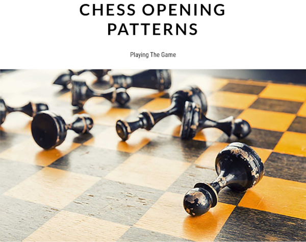
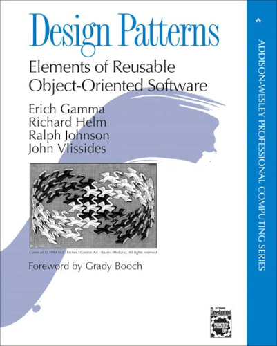
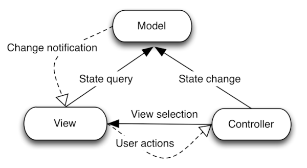
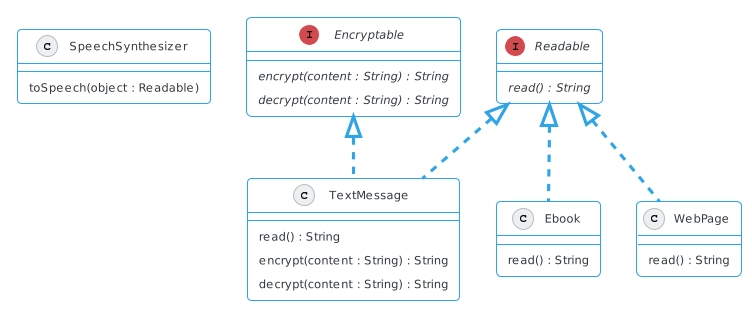
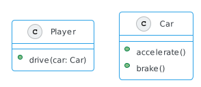
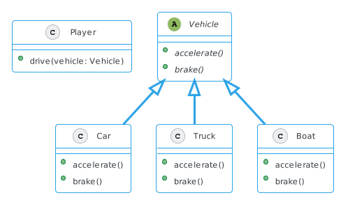
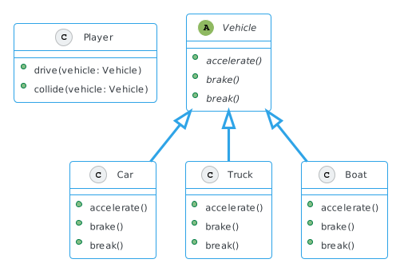
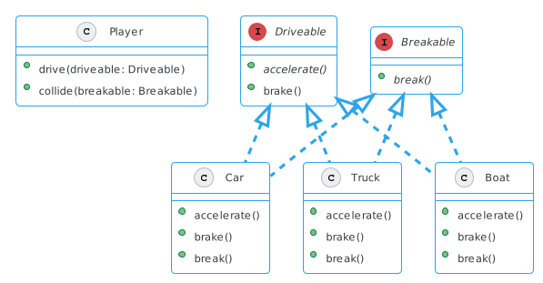
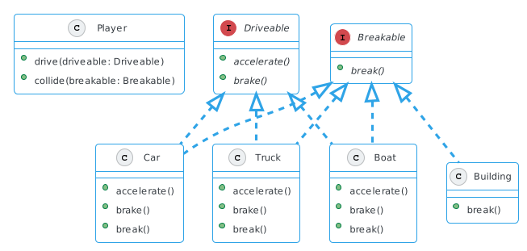
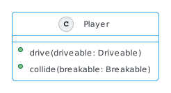

Design patterns
Contents
Design patterns#
Design patterns zijn algemene oplossingen voor veel voorkomende problemen binnen een specifiek domein

Je kent het spel schaken, misschien speel je het zelfs soms. Het spel valt op veel manieren te spelen, maar bijvoorbeeld als het gaat over de eerste zetten die het verdere verloop van het spel kunnen bepalen zijn bepaalde stratiegieën duidelijk geworden en hebben veelal een naam gekregen. Deze strategieën zijn design patterns, algemene oplossingen voor bekende situaties, in dit geval de opening van een schaakspel.

Maar ook in andere domeinen is sprake van design patterns, bijvoorbeeld bij ecommerce, waar je afhankelijk van jouw publiek bepaalde (en bekende!) strategieën kan volgen om tot een zo hoog mogelijke conversie (de omzetting van een bezoek naar een aankoop) te komen.

In object georiënteerd software design is ook sprake van design patterns. Dit zijn algemeen bruikbare patronen, maar kunnen meer of minder relevant zijn per taal, omdat de taal bepaalde kenmerken of gedrag heeft die sommige patronen overbodig of mnder relevant maakt. De design patterns die de auteurs (ook soms de gang of four genoemd) bespraken hebben een duidelijke oorsprong in de taal C++ maar zijn ook toepasbaar in talen als Java en C#.
Voordelen#
gemeenschappelijk vocabulair
worden begrepen door anderen
gesprekken gaan over ontwerp, niet de details
Net als bij schaken hebben de design patterns namen gekregen, namen die elke software ontwikkelaar kent. Het is met andere woorden een gedeeld vocabulair geworden waar iedereen zal weten wat je bedoelt en dit maakt het mogelijk om een gesprek over het ontwerp te voeren en niet direct over de specifieke details van een oplossing.
Bekende patronen#

Design patterns heb je eerder gezien, bijvoorbeeld het Model View Controller (MVC) patroon dat werd gebruikt bij Webtechnologie I, waar de verantwoordelijkheden duidelijk werden gescheiden. Het model was verantwoordelijk voor de CRUD operaties, de view voor het tonen van het resultaat (met behulp van templates) en de controller die het geheel orkestreert (dit waren de functies die verantwoordelijk waren voor een route).
Minder goed zichtbaar was de interactie van een model met een achterliggende database, waar maar één databaseconnectie wordt onderhouden in plaats van één connectie per gebruiker (de bezoeker van een webpagina). Het laatste is inefficiënt en de onderliggende implementatie zal moeten zorgen dat maar één connectie mag bestaan. Dit idee zal je later terugzien in het singleton pattern.
Een eerder voorbeeld#
public class TextMessage {
// ...
}
public class Ebook {
// ...
}
beide hebben een methode
readnodigen we verwachten andere typen, bijvoorbeeld webpagina
Eerste gedachte#
een bovenliggende klasse met een methode
read(implementatie)
De eerste gedachte was om op zoek te gaan naar een bovenliggende implementatie, bijvoorbeeld een klasse met de methode read waar de twee klassen van erven. We zagen ook dat het wat ongemakkelijk werd, het is lastig een bovenliggende klasse te bedenken en eigenlijk zijn we vooral geïnteresseerd in een enkele methode die moet worden geïmplementeerd.
maar we zijn eigenljk op zoek naar de meer algemene kenmerken (gedrag)
We zijn met andere woorden op zoek naar een manier om de functionaliteit of gedrag af te dwingen (een “contract”) en niet zozeer een concrete implementatie (bijvoorbeeld een implementatie van de methode read in een bovenliggende klasse waar we deze methode in onderliggende klassen per geval aanpassen).
public interface Readable {
String read();
}
public interface Encryptable {
String encrypt(String content);
String decrypt(String content);
}
public class TextMessage implements Readable, Encryptable {
@Override
public String read() {
// ...
}
@Override
public String encrypt(String content) {
// ...
}
@Override
public String decrypt(String content) {
// ...
}
}
Het idee van het definiëren van gedrag in de vorm van methoden konden we vormgeven door middel van interfaces die klassen implementeren. Zo bepaalde de interface Readable dat een methode read moet worden geïmplementeerd, maar ook eventueel andere methoden, bijvoorbeeld het geval dat een bericht versleuteld kan zijn (en de klasse ook de interface Encryptable moet implementeren).

De uitwerking die verder volgde zie je hier schematisch weergegeven. Merk op dat we zonder probleem een klasse WebPage kunnen toevoegen die de methode read implementeert, die bijvoorbeeld HTML omzet naar tekst.
Tekst lezen is één ding, maar soms zou het ook uitgesproken moeten worden. Deze functionaliteit zou in een aparte klasse SpeechSynthesizer kunnen worden uitgewerkt. Het enige dat deze klasse nodig heeft zijn objecten die gegarandeerd de methode read hebben geïmplementeerd en dan volstaat het om te controleren op het meer algemene type Readable.
Een ander voorbeeld#

Stel je ontwerpt de volgende versie van het spel “Big Car Theft” waar de speler zich met verschillende voertuigen kan voortbewegen. Als eerste proof of concept beperk je je tot versnellen en afremmen, een eerste impleentatie zou intuïtief als het bovenstaande schema kunnen worden weergegeven.

Als onderdeel van de proof of concept heb je een klasse Car toegevoegd, en je gaat verder uitbreiden. Een klasse Truck wordt onderdeel worden van de mogelijke voetuigen en je breidt de klasse Player uit met een methode drive die naast een Car ook een Truck weet te bewegen. Dit kan omdat je weet van method overloading, je kan een methode meerdere keren definiëren zolang de signatuur uniek is.
Abstractie#

Game designers gaan zich nu met het spel bemoeien en vragen ook om een boot te implementeren. Maar de plannen gaan verder, het is zelfs de bedoeling om fietsen, vliegtuigen, onderzeeboten, jetpacks en ruimtestations toe voegen!
Een volgende (voor de hand liggende) oplossingsrichting zou het implementeren van een abstracte klasse Vehicle kunnen zijn om toekomstige implementaties mogelijk te maken. Je ziet dat we nu probleemloos een klasse Boat kunnen toevoegen!
Verantwoordelijkheid#

De game krijgt een volgende uitbreiding, objecten moeten ook kapot kunnen gaan na een botsing en je definieert in de abstracte klasse Vehicle de methode break. Dit kan voor verwarring zorgen al is het alleen maar omdat de namen brake en break veel op elkaar lijken!
Los van de mogelijke verwarring, de twee methoden horen bij verschillende scenario’s maar kunnen zelfs per object verschillen (bijvorbeeld, sommige objecten kunnen niet breken in het spel). De volgende gedachte gaat nu uit naar het definiëren van twee verschillende klassen voor deze scenario’s om verantwoordelijkheden te kunnen scheiden, bijvoorbeeld in de vorm van een klasse Drivable en Breakable.
Interfaces#

Je weet inmiddels dat dit idee van twee meer algemene klassen niet gaat werken, een klasse kan niet van meerdere klassen erven. Maar meer algemeen, je bent niet zozeer geïntereseerd in mogelijk bovenliggende klassen (implementatie) maar meer in het kunnen afdwingen van functionaliteit (de methoden brake of break, afhankelijk van de context).

De oplossing die we nu hebben is voldoende om andere objecten toe te voegen die variëren, bijvoorbeeld een gebouw (dat wel kan breken, maar niet kan rijden).

Let ook goed op wat we met dit ontwerp hebben kunnen bereiken in de klasse player, waar de methode drive een Drivable en de methode collide een Breakable. Het maakt voor de laatste niet uit of het een auto, boot of gebouw is, het heeft de zekerheid dat de objecten een implementatie hebben van de relevante methoden!
Je ziet hier hopelijk een bekend patroon in terug, het voorbeeld waar we een TexMessage, Ebook en meer gingen modelleren!
Ontwerpprincipes#
Identificeer de aspecten die variëren en scheid ze van wat onveranderlijk is.
In de voorbeelden zag je dat we op zoek gingen naar specifiek gedrag dat veranderlijk is (met andere woorden, veranderlijk per klasse). We hebben dit gedrag kunnen isoleren door middel van interfaces en dit maakt het gemakkelijker later wijzigingen aan te brengen. Deze wijzigingen zouden moeilijker zijn geweest als we meerdere subklassen hadden moeten doorlopen en op zoek hadden moeten gaan naar alle plekken waar het gedrag gedefinieerd was.
Programmeer naar een interface, niet naar een implementatie
Een tweede principe dat uit de voorbeelden naar voren komt is dat het aan te raden is om naar een interface te programmeren en niet een implementatie. Ga altijd eerst op zoek naar wat een gedrag definieert en niet zozeer implementeert, bijvoorbeeld een bovenliggende klasse. Meer algemeen, programmeer naar een supertype, wat de meest algemene vorm is dat het gedrag definieert. In de praktijk zal je zien dat dit vaak interfaces zijn, maar ook abstracte klassen vallen in deze categorie.
Design Patterns#
Creational Patterns
Patronen die objecten creëren, in plaats van objecten direct te instantiëren.
Structural Patterns
Patronen die betrekking op de samenstelling van klassen en objecten.
Behavioral Patterns
Patronen die specifiek betrekking hebben op de communicatie tussen objecten.
Je gaat kennis maken met principes van object georiënteerd software ontwerp in de vorm van algemene patronen die op te delen zijn in de bovenstaande categoriëen. Dit zijn de patronen die oorspronkelijk zijn beschreven in “Design Patterns: Elements of Reusable Object-Oriented Software”.
De specifieke patronen die zijn geïdentificeerd door de “gang of four” kunnen als volgt worden onderverdeeld:
Creational |
Structural |
Behavioral |
|---|---|---|
Abstract Factory |
Adapter |
Chain of Responsibility |
De patronen hebben namen en we zullen in deze module een selectie van deze patronen behandelen (deze zijn hier dikgedrukt weergegegven).